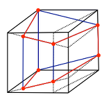
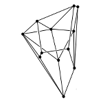
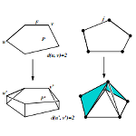

Undergraduate Research
I'm looking for motivated undergraduates who would like to do research in mathematics leading towards a senior thesis. Read below for an idea of what kinds of things I'd like to work on with you. As a brief summary, the research work I do is in optimization and combinatorics. Many of the problems I look at have a geometric or a topological flavor. If you have any questions, please come and ask! If you'd like to look into undergraduate research, it would be ideal if you have taken linear algebra, discrete mathematics, and multivariable calculus. I also welcome students who have an interest in computer programming and would like to incorporate this into projects. As far as funding your research, more details will be posted as soon as I know them!
Linear Optimization and variants of the Hirsch Conjecture

Linear optimization (also known as linear programming) is a classic model of mathematical optimization which has many real-world applications. Examples include applications in
transportation problems,
computational biology,
radiotherapy treatment design,
economics,
marketing,
spatial interaction modeling,
criminal justice administration,
archaeology modeling,
business,
optics,
resource allocation,
production planning,
sparse reconstruction of data,
coding theory,
marketing strategy,
among others.
The solutions of linear optimization problems are often used to solve more intricate optimization problems. As in all optimization problems, one hopes to determine the optimal solution among a collection of candidate solutions (called feasible solutions) which must satisfy a collection of restrictions (known as the constraints). What differentiates linear optimization from general optimization problems is that constraints in linear optimization are defined by linear inequalities. More concretely, a generic linear program with \(n\) variables \(x_1,\dots,x_n\) is defined by \(m\) inequality constraints of the form
\[
a_{1}x_1 + \dots + a_{n}x_n \leq b.\\
\]
To understand how to solve linear optimization problems, one must first understand the set of feasible solutions from a geometric perspective. Because the constraints of linear optimization problems are given by linear formulas, the boundaries of the region are flat. More specifically, the set of feasible solutions is a called a
polytope, which is the high-dimensional analogue of a convex polyhedron. (The beautiful study of the
geometry of convex bodies is a key prerequisite to
convex optimization.)
A polytope is an object from Euclidean geometry determined by cutting \(n\)-dimensional space, and the resulting flat sides are themselves polytopes of dimension \(n-1\), known as facets.
To finish the link between the optimization setting and the geometric picture, we describe the correspondences of the relevant quantities: the number \(n\) of variables from the linear optimization problem turns into the dimension \(n\) of the polytope and the number \(m\) of inequalities turns into the number \(m\) of facets of the polytope.
In the context of linear optimization, the graph of the polytope is the most significant object to analyze. Like polyhedra in dimension \(3\), polytopes in any dimension have corners known as vertices and connections between them known as edges. The graph of a polytope (which is a graph in the sense of graph theory) is simply the vertices and edges of the polytope.

Developed by Dantzig in 1947, the simplex algorithm still remains the most popular procedure used to solve linear optimization problems. It is considered one of the top algorithms of the 20th century. While it is complicated to describe how industrial computer software packages (such as
IBM's CPLEX optimizer)
implement the algorithm, it is easy to give a geometric interpretation of what the simplex algorithm does when one keeps in mind that the set of feasible solutions is a polytope. The simplex algorithm starts at a vertex, then iteratively moves to another vertex related to the current one according to the edges in the graph of the polytope. The algorithm stops once it is able to prove that the current vertex is the solution for the linear optimization problem.
Because of this geometric description of the simplex algorithm, which traverses the graph of the polytope from vertex to vertex along edges of the graph, the diameter of a polytope is the crucial quantity to study. The diameter of the polytope is the smallest number of edges needed to travel between any two vertices of the polytope traveling along edges of its graph. Having a short diameter means that there are short paths between vertices, and thus increases the likelihood that the simplex algorithm quickly solves the associated linear program. Since the simplex algorithm runs quickly in practice, it is natural to conjecture that the diameters of polytopes is small.

Posed in 1957 by Warren Hirsch and first recorded in
Dantzig's monograph on linear optimization, the Hirsch Conjecture stated that the diameter of every \(n\)-dimensional polytope with \(m\) facets is at most \(m-n\). If the Hirsch Conjecture were true, it would increase the likelihood that every linear optimization problem could be solved quickly using the simplex algorithm, since the conjecture supposes that the diameters of polytopes are small. Because of its ramifications in the efficiency of the simplex algorithm, the Hirsch Conjecture and related questions about the diameters of polytopes has been an extremely active area of study among researchers in discrete mathematics and optimization.
While many researchers attempted to prove or disprove the Hirsch Conjecture, it remained open for over fifty years. In 2010,
Santos proved that there is a \(43\)-dimensional polytope with \(86\) facets that is a counterexample to the Hirsch Conjecture. More recently
Matschke, Santos, and Weibel proved there is a \(20\)-dimensional polytope with \(40\) facets that is a counterexample to the Hirsch Conjecture. The status of the Hirsch Conjecture remains open for polytopes of dimension \(4\) through \(19\).

Now that the Hirsch Conjecture is known to be false, there are many new conjectures which should be considered. One can guess new upper bound formulas, but what is potentially more interesting than studying whether a specific exact formula is an upper bound is determining the asymptotic growth of the diameter. In other words, the questions one can ask are about the trend of the diameter when compared to the number \(m\) of facets. The first asymptotic variant is known as the Linear Hirsch Conjecture, which asks if the relationship between the diameter and the number \(m\) of facets is linear in \(m\). There is also a Quadratic Hirsch Conjecture (which has the definition you think it does) and a Polynomial Hirsch Conjecture. The Polynomial Hirsch Conjecture is the subject of an active
worldwide online mathematical collaboration known as Polymath3.
Since the 1970s, well before the Hirsch Conjecture was proved false, researchers in mathematical optimization and discrete geometry noticed that there are three key properties which were always satisified by the graphs of polytopes. Though all three of these properties are satisfied by polytope graphs, any number of these properties can be studied on their own (or as a collection) to analyze the behavior of graph diameters. This produces a rich theory of graphs in abstract polytopes and has been an extremely popular research approach in polytope theory recently due to Santos' counter-example to the Hirsch Conjecture. For instance, in 2010
Eisenbrand et al. proved that graphs corresponding to \(n\)-dimensional polytopes satisfying the hardest of the three properties have a diameter which grows on the order of \(n^2 / \ln n\). This abstract polytope construction was the first evidence that the Linear Hirsch Conjecture may be false for polytopes. More recently,
I proved that graphs corresponding to \(n\)-dimensional polytopes satisfying the remaining two properties have a diameter which grows on the order of \(n^2\). This bound was recently improved by
Hähnle.